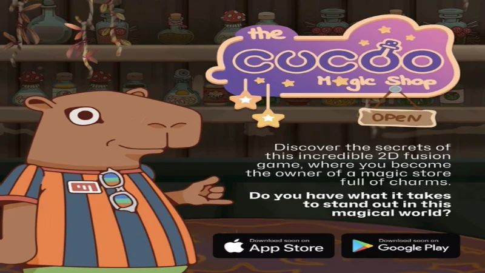
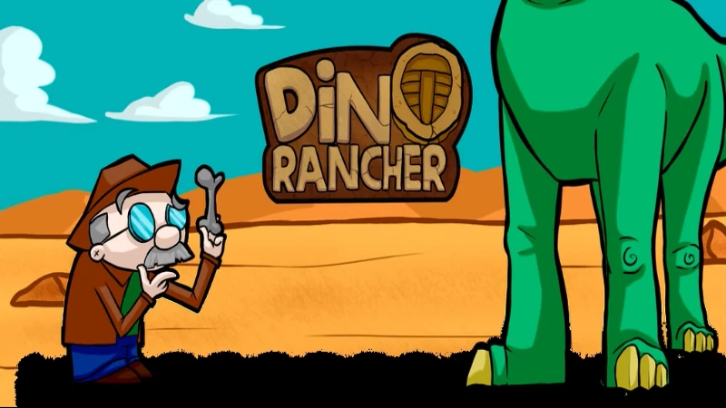
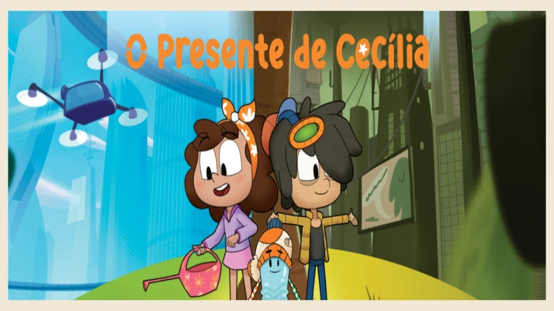
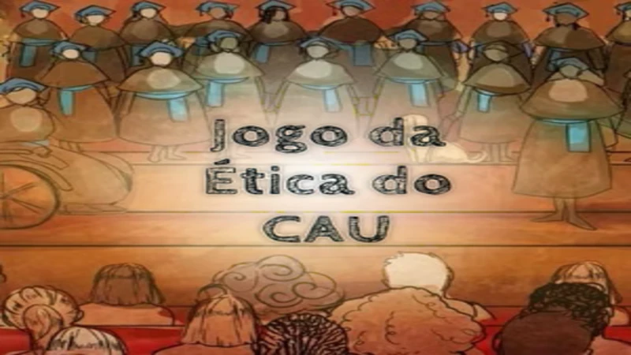

Full game development
Build a scoped 2D or 3D Unity game, from its core loop to a functional build.
- Gameplay and game flow
- UI and feature integration
- Scope agreed before development
ERIC COLLE NICKEL · FREELANCE UNITY DEVELOPER
I build games, untangle bugs, and turn ideas into working Unity systems. From the first prototype to the details that make a game feel right.
Unity 2D / 3D C# Based in Brazil

Merge mechanics. Crafting. Economy.
Gameplay programming
with small-team experience.
HOW I CAN HELP
Bring an idea, an existing project, or a reproducible bug. We’ll define a practical scope for the next step.
Build a scoped 2D or 3D Unity game, from its core loop to a functional build.
Get an existing Unity project moving again by tracking down the issue behind the symptom.
Add the mechanics your project needs, with behavior and integration tailored to your game.
Test the central idea before committing to a larger production. Focus on what needs to be playable.
SELECTED WORK
Professional and team projects, with the programming contributions behind the player experience.
LUMO ENTERTAINMENT · PUZZLE / ECONOMY
An owl wizard opens a potion shop: find hidden ingredients, merge them into crafted items, and serve customers.
Implemented merge mechanics for the crafting and selling loop in this 2D top-down Unity game.

PROJECT ARTWORKSTUDIO ARCHEORAPTUS · IDLE / CLICKER
Excavate DNA, revive dinosaurs, and grow production in an idle game built around upgrades and automation.
Implemented upgrade trees, automation, achievements, and event systems.

PROJECT ARTWORKLUMO ENTERTAINMENT · EDUCATIONAL ADVENTURE
Cecília connects with Marquinhos in the future and works to change an environmentally threatened world.
Built diverse minigames, adapting mechanics from an educational theatrical production into a digital game.

PROJECT ARTWORKLUMO ENTERTAINMENT · SIDE-SCROLLER / QUIZ
Architecture graduates travel across São Paulo in an educational experience about professional ethics.
Programmed the 2D side-scrolling and quiz-based game, integrating linear gameplay mechanics.
STUDIO ARCHEORAPTUS · METROIDVANIA
A narrative-driven 2D platformer exploring forgiveness through combat, environmental puzzles, and exploration.
Programmed the game as part of a student-led team, working on a project combining action combat and puzzle mechanics.
STUDIO ARCHEORAPTUS
Delivered a 2D mobile minigame under a publishing deal, addressing corporate challenges through gameplay.
STUDENT PROJECT · 2020–2021
Co-developed a third-person 3D Metroidvania with Souls-like elements and RPG mechanics in an experimental studio during studies.
STUDENT PROJECT · 2019–2020
Co-created a 2D survival game with economy-driven gameplay and a strong narrative focus in an experimental studio during studies.
THE DEVELOPER BEHIND THE WORK
I’m Eric Colle Nickel, a Brazilian Unity / C# developer with experience in indie games, educational projects, and small development teams.
My work spans gameplay programming, design thinking, project management, and end-to-end game production. I bring that perspective to freelance games, fixes, custom systems, and prototypes.
Connect on LinkedInFEB 2023 — JAN 2025 · REMOTE
Developed Unity-based indie games, coordinated publishing deals, and improved project delivery pipelines. Projects include Cucoo, Cau’s Ethics Game, and O Presente de Cecília.
JUL 2021 — JAN 2023 · REMOTE
Collaborated with a student-led team on Project Aysha, Dino Rancher, and a Sebrae mobile minigame, gaining experience in small-team production and agile execution.
JAN 2019 — DEC 2021 · CURITIBA, BRAZIL
Practical game development, programming architecture, design principles, and production pipelines.
MY TOOLKIT
Gameplay programming supported by a broader development toolkit.
C#, C++, JavaScript, Lua, HTML, CSS, SQL, PHP.
Unity 2D / 3D, Unreal Engine, Blender, Git, Visual Studio, VS Code, MySQL, phpMyAdmin, Eclipse, Office.
Game development, Agile, Scrum, Lean, Design Thinking, project management.
Brazilian Portuguese — native. English — conversational. German and Spanish — average (self-assessed).
LLM prompt engineering, image generation, audio and SFX generation, 3D asset upscaling / generation / rigging, video generation.
WORKING TOGETHER
Tell me what you’re building, your Unity version, and the feature or problem you need help with.
Agree on deliverables, project access, assets, and milestones before development starts.
Review the agreed functionality in a working build and refine it against the project scope.
LET’S MAKE IT PLAYABLE
A complete game, a stubborn bug, a new system, or the first playable version. Tell me where you are and where you want to go.
Discuss your project on FiverrComing from Fiverr? Keep project discussions and orders on Fiverr.
Include the service, your current project state, target platform, deadline, and any references or bug reproduction steps.